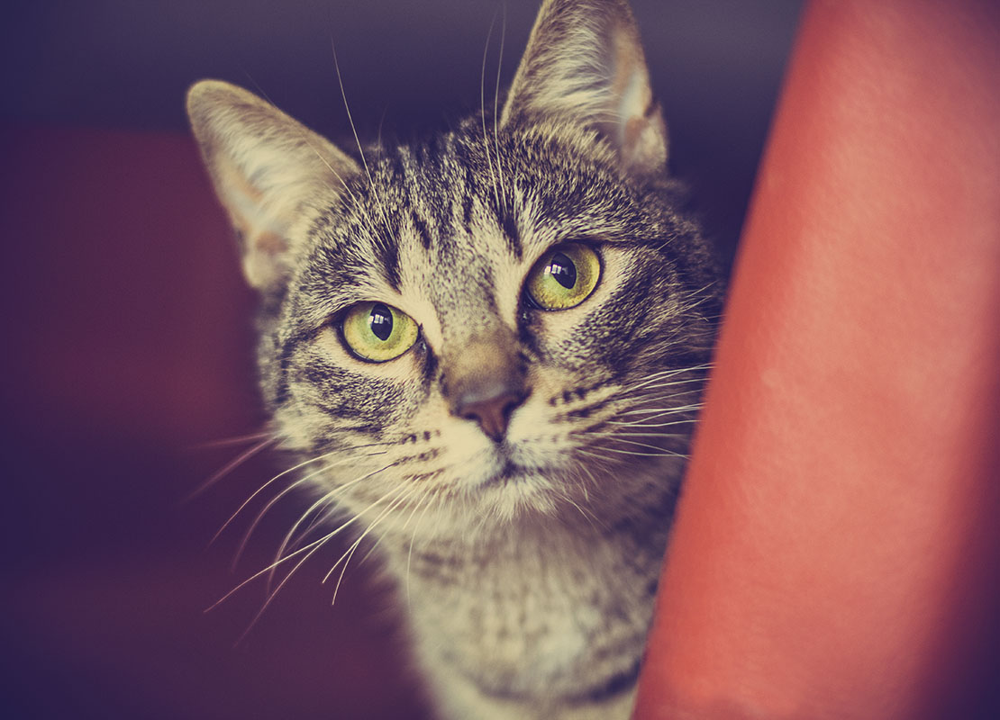

Les chats : définition
Le Chat domestique (Felis silvestris catus) est la sous-espèce issue de la domestication du Chat sauvage (Felis silvestris), mammifère carnivore de la famille des Félidés.
Il est l’un des principaux animaux de compagnie et compte aujourd’hui une cinquantaine de races différentes reconnues par les instances de certification.
Quelques races de chats
- Bengal
- Chartreux
- Maine coon
- Ragdoll
- Sphynx